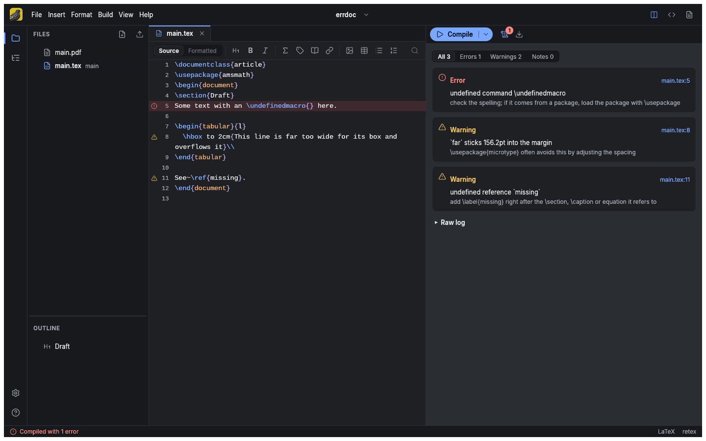

Building and exporting
A build turns your sources into a PDF. TeXCraft runs it for you as you type, explains what went wrong, and exports the result to other formats.
Compiling
The Compile button at the top of the PDF pane builds the project now (Ctrl+Enter). With automatic builds on, it reads Auto-Compile, outlined in grey with turning arrows (a spinner while a build runs) instead of the blue of an action to take, and a build starts each time typing pauses (see Automatic builds). While a build runs, the status bar and the PDF pane's header show the pass and the page being built.
The button's menu half (the arrow on its right) opens its options:
- Compile automatically: on or off.
- Draft images (framed boxes): images drawn as boxes with their names, for faster builds.
- Stop at the first error: otherwise the build goes on and reports every error.
- The kind of PDF: PDF for the screen, Accessible PDF (PDF/UA) or PDF for print (PDF/X) (below).
- Delete Build Files: the next build starts from scratch.
- Stop Compiling.
The engine (LuaLaTeX or pdfLaTeX, or chosen from the document) is set in Settings › Building.
On the desktop, the build runs in a helper that keeps the preamble ready between builds, so a rebuild after an edit usually takes under a second, even with a heavy preamble. In the browser, the first build of a visit fetches the TeX files the document reads; they are kept for the next visit.
Bibliographies (BibTeX and biber) and indexes (makeindex) run inside the build, as many times as the document needs: there is nothing else to run.
The build log
Build log in the PDF pane shows the last build's messages in the PDF's place; Back to PDF returns. Its badge counts the errors (or, without any, the warnings), and its name says the count too: Build log, 2 errors.

- Each message is a card: its kind (error, warning, note or hint), what it means in words, help on how to fix it, and a link to the line. The same lines are marked in the editor's gutter, and errors are underlined in the text.
- A problem is linked where it starts, which is not always where TeX noticed it: an environment left open in an included file is noticed only at the main document's
\end{document}, and a{never closed at the\inputline that read the file. Such a card links to the\begin(or the{) in its file, and under the message to TeX noticed it at main.tex:59; the editor marks both lines. - The filters at the top show All, Errors, Warnings or Notes, and for accessible and print builds Accessibility and Print.
- Messages can be selected and copied; Copy the message on a card, or Copy the messages shown for all of them.
- With a model connected, Explain on a card asks it for a plain explanation and a fix (AI assistance). Desktop only
Hiding messages of a kind
Some warnings come by the dozen and need no fixing: every overfull box, or every bibliography entry without page numbers. Hide Like This on a warning's or a note's card hides every message of its kind, In This Project or In All Projects. Errors are never hidden.
- A kind is the message with what varies left out: what is quoted, file names and numbers. Overfull \hbox (12.0pt too wide) in paragraph at lines 3--5 and Overfull \hbox (0.5pt too wide) in paragraph at lines 40--41 are one kind; a BibTeX entry without pages and one without a journal are two.
- The log then says how many it hides (12 hidden messages); Show lists them again, each with Show Again. Hidden warnings are not counted on the Build log button or in the status bar, and are not marked in the editor.
- Settings › Building lists the kinds hidden in this project and in all projects, each with Show Again.
- A project's choice is kept in its folder, in
.texcraft/hidden-messages.txt; one for all projects is kept with your settings.
Not yet: in the browser, and for a project not saved to a folder yet, a kind hidden in this project stays hidden only until TeXCraft closes; hide it in all projects to keep the choice.
The raw log and the output files
The log also has two sections you can fold: the engine's Raw log, with a search field (Previous Match, Next Match and the count of matches) and Copy the Raw Log, and the Output files of the build: the PDF, the PDF for print when one was made, the SyncTeX data and the log.
- On the desktop, Save As… writes one where you choose; then Show in Folder shows it in your file manager. The build keeps its files in memory until you save them.
- In the browser, Download saves it through the browser.
For what common messages mean, see Troubleshooting.
Between the source and the PDF
- From the PDF to the source
- Double-click (or Ctrl+click) a place in the PDF: the editor opens the file and line that wrote it, which flashes briefly. This works across files included with
\inputand\include. - From the source to the PDF
- Edit › Go To › Show in PDF (Ctrl+Alt+J), or the text's right-click menu, marks the caret's line in the PDF and scrolls to it.
A line not in the PDF yet (written since the last build) says so: compile first.
The PDF preview
- Pages and zoom: the arrows go to the previous and next page; the zoom menu has Fit width, Fit page and fixed zooms from 50 % to 400 %. Zoom In Ctrl+=, Zoom Out Ctrl+-, Actual Size Ctrl+0. Ctrl (Cmd on a Mac) with the mouse wheel, or a pinch on a touchpad or a touch screen, zooms around the pointer.
- Moving around: the wheel scrolls; when the pages are wider or taller than the pane, drag with the middle mouse button to move them.
- Links in the PDF work: to a place in the document, or to a web or mail address, which opens in your browser.
- Text can be selected and copied, on one page at a time.
- Presenting: Present in the zoom menu, or F5, shows a page at a time in the whole window. The arrow keys, Space, Page Up and Page Down move between pages, and Escape leaves.
- A window of its own: Open the PDF in its own window, in the PDF pane, moves the PDF to a second window, for a second screen; close it, or choose a layout, to put it back. Desktop only
Not yet: a presentation fills the window, not the whole screen (make the window full screen first).
PDFs for screen readers
With Accessible PDF (PDF/UA) chosen, the build makes a tagged PDF following the PDF/UA standard, and checks it the way a screen reader would need it: a figure without alternative text, for example. Each finding is listed under the log's Accessibility filter with a link to its source line.
Not yet: accessible builds do not reuse the prepared preamble, so their rebuilds are slower.
PDFs for print
With PDF for print (PDF/X) chosen, the build also makes a PDF/X file as printers expect it. In Settings › Building, choose the standard (PDF/X-4 keeps colour profiles and transparency; PDF/X-1a is CMYK only, for older workflows), the bleed (how far the art runs past the page's edges, often 3 mm) and crop marks.
The build checks the file as a printer would (image resolution, ink coverage, fonts…). The log then starts with Ready for print or the number of problems, lists them under the Print filter, and Show it on the page marks where each one is. The print PDF is one of the output files, to save from the log.
Saving the PDF
Save PDF As… (Download PDF in the browser) keeps the last build's PDF: the download button in the PDF pane, beside Export, the first entry of the Export menu, or File › Save PDF As…. On the desktop it asks where to save; in the browser the file is downloaded. For a print build it is the PDF/X.
Exporting to other formats
Export, in the PDF pane, saves the document in another format:
| Entry | What you get |
|---|---|
| Save PDF As… (Download PDF in the browser) | The last build's PDF (the same as File › Save PDF As…). |
| DOCX Document (.docx) | A word-processor document of the text. |
| OpenDocument Text (.odt) | The same, in the OpenDocument format. |
| PPTX Presentation (.pptx) | Slides, one per frame of a beamer presentation. |
| OpenDocument Presentation (.odp) | The same, in the OpenDocument format. |
| Web Page (.html) | An HTML page of the document. |
| Markdown (.md) | A Markdown file of the document. |
| SVG Image (.svg) | The document as an SVG image. |
For a beamer presentation the presentation formats come first in the menu. On the desktop TeXCraft asks where to save; in the browser the file is downloaded. The button reads Exporting… while the file is made, and the status line says when it is done. The PDF pane always shows the PDF: the other formats are exports only.
The conversions are retex's: a document using packages the converter does not know comes out simpler than its PDF. Check an export before sending it.
Building without a window
The command-line tool builds a project folder: texcraft-cli compile FOLDER, or texcraft-cli compile FOLDER --output paper.pdf to choose where the PDF goes. The AppImage is the command-line tool too when run through a link named texcraft-cli. Desktop only